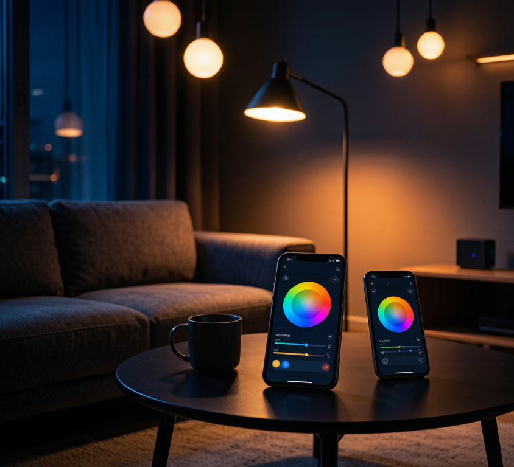

断网那一刻，你的"全屋智能"变回了"全屋智障"
想象这个场景：晚上10点，你刚躺上床准备睡觉，路由器突然死机了。你想关灯——语音控制没反应，手机APP打不开，连物理开关都被智能模块接管了。你只能摸黑爬起来，去配电箱拉闸。
这不是段子，是2026年数百万智能照明用户的日常。某平台调查显示，"断网后无法控制灯光"连续三年稳居智能家居投诉榜前三。问题的根源只有一个：你的智能灯太依赖云端了。
为什么传统智能灯离不开网关和云端？
目前市面上大量智能灯采用WiFi方案，工作流程是这样的：
- 手机APP发送指令 → 云服务器
- 云服务器处理 → 推送到家里路由器
- 路由器转发 → WiFi灯泡执行
这条链路中任何一个环节断了，灯就不听使唤。路由器死机？灯失控。宽带欠费？灯失控。云服务器维护？灯还是失控。
更关键的是，WiFi方案天然有个硬伤：每个灯泡都直连路由器。家里装15个智能灯，路由器就要维护15个独立连接。中低端路由器扛到8-10个设备就开始丢包、延迟，灯光响应从0.1秒变成3秒，最后干脆掉线。
这就是为什么越来越多用户发现"越智能越不稳定"。
无网关自组网：让灯泡自己"抱团"
2026年真正火起来的技术叫无网关自组网（Gateway-free Mesh Networking）。核心思路很简单：不要把所有灯泡都绑在路由器身上，让灯泡之间自己组一张本地网络。
它是怎么工作的？
以Zigbee Mesh为例：
- 第一个上电的灯泡自动成为协调器（Coordinator），承担网络管理角色
- 后续灯泡自动加入网络，每个灯既是终端也是中继
- 指令传输走本地Mesh网络，不经过路由器，不经过云端
- 手机控制通过蓝牙直连或本地网关，响应时间<0.1秒
关键区别在这里：
| 对比项 | WiFi智能灯 | 无网关Mesh智能灯 |
|---|---|---|
| 断网可用 | 否 | 是 |
| 响应速度 | 0.5-3秒 | <0.1秒 |
| 路由器负载 | 每灯一个连接 | 零负载 |
| 最大设备数 | 8-15个 | 250+个 |
| 额外硬件 | 需路由器 | 无需网关 |
| 平均功耗 | 2-5W待机 | <0.5W待机 |
| 组网方式 | 星型（1对N） | Mesh（N对N） |
为什么Mesh比星型更稳？
WiFi是星型拓扑——所有设备连到一个中心点（路由器）。中心点一旦出事，全网瘫痪。
Mesh是网状拓扑——每个节点都可以中继信号。假设你有10个灯泡，信号可以从灯A传到灯B再到灯C，任何一盏灯离线，其他灯自动找新路径。这就像快递网络：你不会因为一个中转站关门就收不到包裹，系统会自动改道。
2026年无网关方案的三个主流路线
1. Zigbee自组网（最成熟）
涂鸦、飞利浦Hue、宜家TRÅDFRI都用Zigbee Mesh。2026年Zigbee 4.0新增了SUZI子GHz频段，穿墙能力提升3倍，蓝牙直连手机也支持了。Nexlamp涂鸦Zigbee系列就是走这条路——灯泡上电自动组网，断网照常用，手机蓝牙直连控制。
2. 蓝牙Mesh（最简单）
Casambi、涂鸦BLE Mesh方案。优点是手机直连，完全不需要任何网关。缺点是覆盖范围受蓝牙距离限制，大户型需要足够的灯泡做中继。
3. Matter over Thread（最前沿）
Thread协议本身就是一个Mesh网络，Matter 1.4开始支持无网关模式。但目前设备生态还不够丰富，价格偏高。
选购避坑：别被"伪无网关"忽悠了
市场上有些产品标着"无需网关"，但仔细看说明书才发现——它只是把网关塞进了某个灯具里。如果那个灯坏了，整个网络就散了。真正的无网关方案应该满足：
- 任意设备都能当协调器——不是固定某一盏灯
- 断网后场景联动照常工作——不只开关灯，连"观影模式""睡眠模式"也能本地执行
- 手机蓝牙直连——不依赖WiFi就能控制
- 待机功耗<1W——否则你省下的电费还不够补待机损耗
另外，2027年9月即将强制执行的GB 30255-2026新国标已经明确规定：智能照明待机功耗不得高于1.5W。这意味着那些动辄3-5W待机的WiFi智能灯，明年可能就不合规了。
从"能用"到"好用"，差的不是技术是选择
说到底，智能照明最大的坑不是技术不够先进，而是选错了技术路线。WiFi智能灯便宜、好上手，但它的天花板很低——装到第10个灯就开始不稳定，断网就变废铁。
无网关自组网方案在2026年已经不是小众选择了。涂鸦Zigbee生态设备数量突破5亿台，蓝牙Mesh方案在商用照明领域渗透率超过40%，Matter over Thread也在快速补课。
选灯之前先问自己一个问题：你希望断网的时候，灯还听你的话吗？
如果答案是"是"，那就别再给路由器增加负担了。选一个能自己组网、断网可用的方案，让智能照明回归它该有的样子——简单、稳定、不添堵。
Nexlamp涂鸦Zigbee智能照明系列，支持无网关自组网、断网本地控制、蓝牙直连。了解更多：www.nexlamp.com